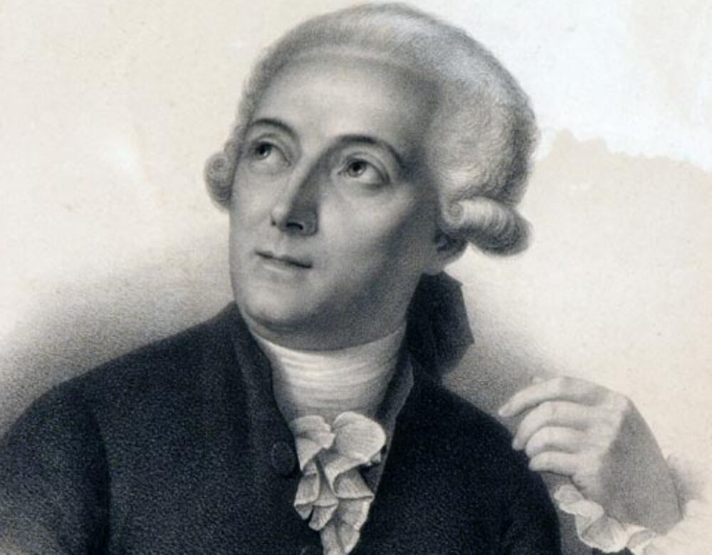

Antoine Lavoisier (1789)
Law of Conservation of Mass
Lavoisier discovered that matter is neither created nor destroyed in chemical reactions.
He is known as the "Father of Modern Chemistry."
An Interactive Journey Through the Discoveries that Shaped Modern Science
Lavoisier discovered that matter is neither created nor destroyed in chemical reactions.
He is known as the "Father of Modern Chemistry."
Proposed that all matter is made of tiny, indivisible particles called atomos.
Philosophical ideas that laid the foundation of atomic theory.
Equal volumes of gases, at the same temperature and pressure, contain equal numbers of particles.
Introduced the concept of the mole and Avogadro's number.
Discovered electrons embedded in a positively charged sphere using cathode rays.
Measured the exact charge of an electron, confirming Thomson’s discovery.
Electrons move in fixed energy levels, emitting or absorbing energy between jumps.

It is impossible to know both the exact position and momentum of an electron simultaneously.
Electrons exist in probability clouds called orbitals. This is the most accurate atomic model today.